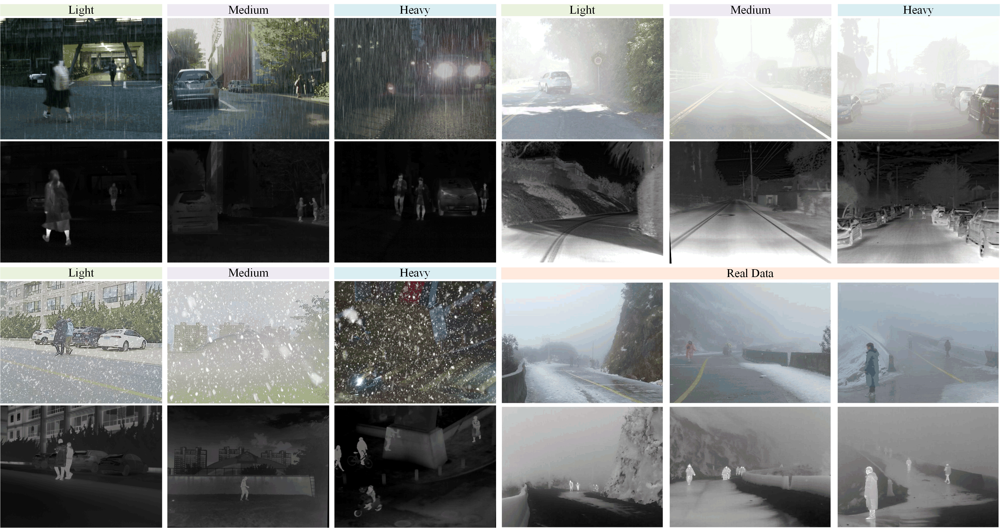

Abstract
Current MMIF datasets lack comprehensive scene coverage under adverse weather. Combining existing datasets (RoadScene [28], MSRS [46], M3FD [3], and LLVIP [47]) and our newly collected data in real-world scenes, we have established a benchmark AWMM-100k, which encompasses a diverse range of weather conditions. Each type of weather (rain, haze, and snow) is categorized into heavy, medium, and light levels. The AWMM-100k dataset was collected using a DJI M30T drone, equipped with high-resolution visible and thermal imaging cameras to capture data in complex scenes
Dataset Overview
这里是数据集概述的内容。你可以描述数据集的多样性、应用范围以及一些关键特点。
